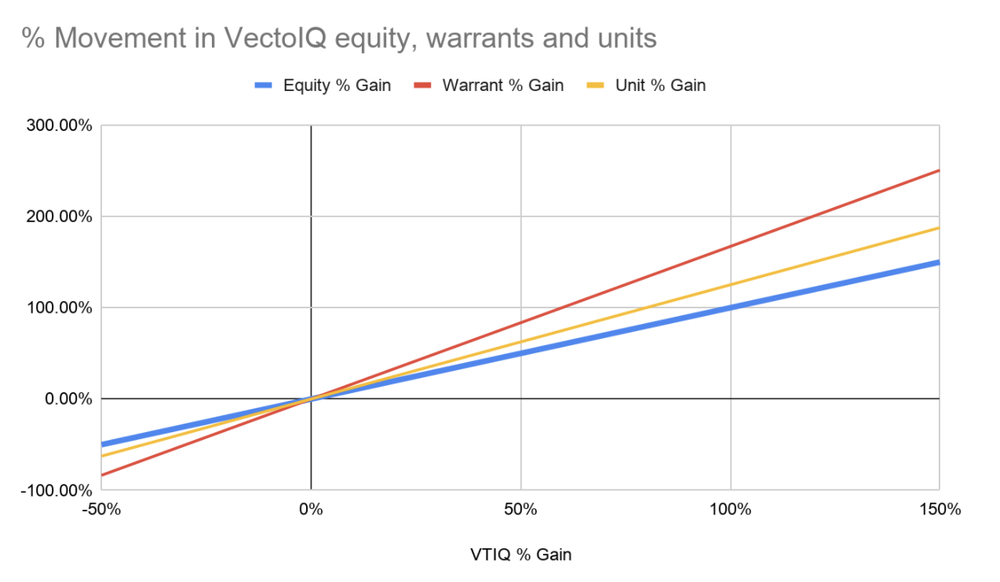

What is VectoIQ (VTIQ) and why has it been increasing so much?
VTIQ will complete the process of acquiring Nikola Motors by the end of June, and powered by the overall market rising, fear of missing out, and hype around this next “Tesla”, the new entity will skyrocket before coming down to reality.
Intro to VectoIQ
VectoIQ Acquisition Corporation, or VTIQ, is a SPAC that was founded by ex-GM Vice President Steve Girsky that aims to acquire the assets of Nikola Motor, a fully electric and hydrogen fuel cell semi-truck manufacturer. If the acquisition passes, Nikola shareholders will receive 1.901 shares of VTIQ for each share of Nikola they currently own (or 0.53 shares of Nikola for each share of VTIQ). The new entity will trade on the Nasdaq as “NKLA.” The shareholders of VTIQ are scheduled to vote on the proposed acquisition on June 2, and the chances of the acquisition passing are very high. Needless to say, VTIQ shares have had a massive run up since May 1 - up 120%. We believe that the biggest catalyst now for further growth are 1) the official passing of shareholder approval for acquiring Nikola, and 2) investors on the sidelines getting FOMO over what is hyped as “The Next Tesla.”
Intro to Nikola
Nikola Motor was founded in 2014 by Trevor Milton, an experienced entrepreneur focused in the alternative energy vehicle space. The current product lineup on the semi-truck side of the business includes 3 variants: ranging from 1) Nikola One, a hydrogen fuel cell full sleeper cab, 2) Nikola Two, a fully electric and hydrogen fuel cell day cab, and 3) Nikola Tre, a fully electric and hydrogen fuel cell cabover (no sleeping arrangements). All 3 versions are available in North America, and the Tre, the most compact version, is also available in Europe for the tighter roads. In addition to their semi-truck lineup, Nikola recently announced the Badger, which is a fully electric and hydrogen fuel cell pickup. The Badger is not available for sale yet, but a quick glance at the design and performance statistics makes it clear that Tesla, Ford, and Toyota just got a new competitor in the personal electric pickup scene.
The second, but most essential part of their business is their hydrogen charging network. It offers heavy duty fast fueling, a longer range as compared to standard diesels and electric only trucks, as well as less weight overall and zero emissions. Nikola is betting on hydrogen fuel cell technology as an even better alternative to fossil fuels, as not only does hydrogen have the same benefits of electric vehicles (more horsepower, more instant torque, zero emissions, etc) but it also improves on some of the largest downfalls of current electric vehicles: long charging times, limited range, increased weight, and potential ineffectiveness in the cold. Nikola has a vision of building their hydrogen charging stations across the country, and if done successfully, they can sell their power to drivers just as normal gas stations do today. A look at their website shows their future plans with regards to expansion of their hydrogen fuel cell charging network.
As the last part of their business, Nikola also offers powersports vehicles in the form of buggies, called the NZT and the Reckless, as well as a jetski, called the Wav. These power “toys” are currently still in the prototype phase, but they just go to show how large of a potential market their technology can cater to. The growth potential for their core technology and powertrain is massive, especially if they can license it out in the future, or co-brand products. Even now, in its earlier stages, the company has a pre-order backlog of more than $14 billion, with large brands such as Anheuser Busch ready to buy 800 of the full size semi-trucks by 2025. To us, this shows that the underlying technology has come a far way since 2014 and has a clear runway to grow further.
How to Invest
There are three ways in which you could invest in this opportunity (outside of calls, puts or shorts): VTIQ (equity), VTIQW (warrants) and VTIQU (units). VTIQ represents the shares of VectoIQ and will end up being equivalent to 0.53 shares of Nikola after the acquisition. VTIQW represents the warrants of VectoIQ with a strike price of $11.50. Once the acquisition is complete, the VTIQ warrants transition into Nikola warrants, with the same stipulations and price. VTIQU represents one share and one warrant of VectoIQ.
The equity (VTIQ) is the safest option out of the three as it represents pure equity. Due to that, it will have relatively more stable price movements and relatively less volatility than the warrants or the units. On the downside, with less volatility, the equity will also have less percentage gains as the company appreciates in value as compared to the warrants and units. In addition, each share of VTIQ will only be worth about half a share of NKLA once the business combination is finished.
The warrants (VTIQW) are the best option out of the three if you are looking for the most upside potential. It will gain a lot more percentage wise than the equity or the units on green days but it will also lose a lot more on red days. In addition, keep in mind that the warrants are not exercisable until 30 days after the business combination. The biggest risk with warrants is that the new company (NKLA) will have the right to buy all warrants back from holders at $0.01 per warrant if the shares of NKLA trade at $18 or more for 20 or more business days within a 30 day period (the company will issue a redemption notice before doing this). Clearly, as a warrant holder, it would be prudent to either sell or exercise your warrants in that eligible time span before you are obligated to sell your warrants back to the company at negligible par value.
The units (VTIQU) are a middle ground between the equity and the warrants as each unit represents one warrant and one share of equity. Consider buying the units if you want to be exposed to more upside than you would with equities but without being exposed to as much downside as you would get with the warrants.
Below is a chart of how the values of VTIQW and VTIQU will change with fluctuations in the price of VTIQ based on the price of VTIQ at the time of writing of $28.63. (Keep in mind that this chart only shows what the exercise value of VTIQW and VTIQU would be and does not reflect what the future market value will be)
As you can see, warrants will move much quicker with changes in the underlying equity. Units will move quicker than the equity but slower than the warrants. Overall, we think about equity versus warrants versus units as: low risk/low reward, high risk/high reward, and medium risk/medium reward investments, respectively.
Risks with VTIQ and SPAC Investments
With any investment, there is risk of a decrease in your principal. With SPACs, that risk is higher because of 1 major reason: there is always the possibility that no matter the amount of hype running shares upwards as a result of a planned acquisition, shareholders could potentially vote “no”. The likelihood of this happening with VTIQ is slim, as shareholders have been adequately informed of the upside potential of Nikola Motors, but regardless, until June 2, that possibility of a rejected acquisition exists.
Focusing more on VTIQ in particular, there is another large risk that presents itself with a potential investment: volatility. The absolute value of the average percentage change in VTIQ shares over the past 20 trading days from the end of April to the end of May is 9.06%. Average volume has been over 8 million shares a day over that same time period (April 27, 2020 - May 27, 2020), and for a company that is valued at less than $900 million, that is high.
The point here is that the daily movements of VTIQ have been, and will continue to fluctuate by a large amount. The expected movement upward of VTIQ after the shareholder vote should increase greatly as it “officially” becomes Nikola Motor. We expect an influx of FOMO buying and more widespread media coverage to quickly pump this stock higher in the month of June following its approval.
Undoubtedly, the comparisons to Tesla will only help to pump the stock even more as less informed investors trying to get in front of themes such as “alternative energy” and “electric mobility” pile in. While it is clear that such comparisons are natural, keep in mind that Tesla is cranking out over 100,000 vehicles per quarter now while Nikola plans to break ground at its flagship production plant in Arizona this year. Even in 2023, when the plant will become fully operational, the yearly forecast for estimated output will be 50,000. As mentioned previously, we definitely see the potential and future ability of Nikola, but we want to warn investors here first that there will be a huge run up (and eventually, down) simply as a result of hype, media coverage, FOMO buying, and future expectations as opposed to an emphasis on anything fundamental - earnings, outputs, or financials. It will be a number of years before it can actually compete head to head with the likes of Tesla, or other entrenched legacy manufacturers converting their fleets to electric.
Conclusion
In conclusion, we believe in Nikola Motors as a long term player and powerful entrant in the electric vehicle space. We also believe in the utility and flexibility of SPACs as a way for companies to go public and as a way for investors to store cash in a relatively safe “public investment” as the SPAC hunts for an acquisition. However, we want to highlight the risks associated with this as SPACs can be very volatile, speculative, and difficult to time correctly as they often lack widespread news coverage. If you are considering buying into VTIQ or the resulting business combination (NKLA), we recommend that you take a deep dive into the company’s fundamentals and growth prospects and disregard any of the hype or speculation that is flying around in order to make a sound investment decision.
Disclaimer: We are not registered investment, tax or legal advisors or brokers and therefore cannot promise or guarantee any financial returns from our opinions on this page or site. The content of this article is based on our own personal thoughts and research and you should do your own due diligence before making any investment decisions. This article may be structured as such, but it is not financial or investment advice. While we do make our best effort to ensure that all information in our articles is accurate and up to date, occasionally unintended errors or misprints may occur. One or more contributors to this article may have personal positions in equities mentioned in either the past, present or possibly future. Remember that all investments in the market face the risk of going to $0. The contributors of this article have no business or personal relationship with any company mentioned in the above article.